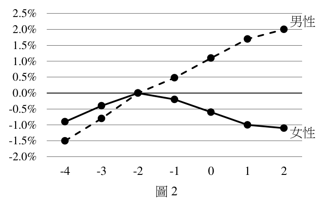
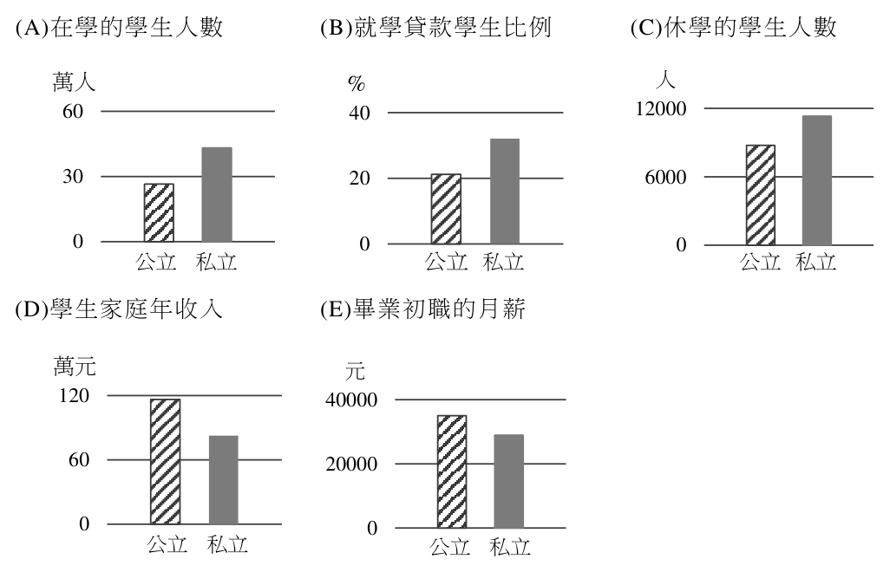
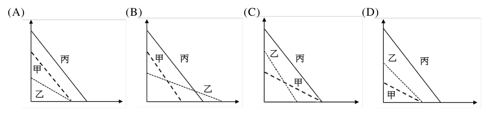

開卷有益 ／
分科測驗 ／ 公民與社會 ／ 114 年114 年分科測驗公民與社會試題與答案
這一頁是民國 114 年分科測驗公民與社會的整份歷屆試題，共 41 題，題目與標準答案出自大考中心 分科測驗歷年試題（依著作權法 §9，考試試題不受著作權保護），其中 41 題附有詳解。以下逐題列出題幹、選項與答案；要計時作答或記錄成績，請用線上練習。
大學入學考試中心原始場次代碼：分科公民與社會
線上作答這一科 →
全部 41 題
第 1 題
我國各縣市政府對街頭藝人從事表演活動,各自制定相關管理辦法,規範街頭藝人若欲
在公共空間進行展演,須向縣市管理機關申請並獲許可後始得演出。上述政策作為涉及
的縣市政府職權運作,其屬性與下列哪項事例最接近?
（A） 縣市輪流承辦國慶日煙火表演活動（B） 縣市辦理轄區內立法委員選舉事宜（C） 爭取於高鐵行經路線設立縣市車站（D） 建置縣市公共自行車事故處理流程答案：（D）
詳解與考點 正解：關鍵在縣市「各自制定」街頭藝人管理辦法，並就本地公共空間的展演許可自行規劃。這是地方政府依地方生活秩序與公共服務需要行使的自治事項；（D）公共自行車的事故處理流程同樣是縣市就自身交通服務訂定規範並負責執行，兩者屬性相近，故選 D。
A：國慶日煙火屬全國性慶典，縣市即使輪流承辦，活動的主辦與整體決定仍非地方自為規範的事項。
B：立法委員選舉要求全國一致的程序與標準，縣市是依中央選務規範辦理，屬委辦性質，不能各自訂定選舉辦法。
C：爭取高鐵設站是在表達地方需求，最終決定權不在縣市政府，並非地方政府正在行使的法定職權。
本題考點：自治事項（local self-government affairs）——規範可否因地方需要而自訂、責任是否由地方承擔，是判別核心；委辦事項（delegated affairs）——全國一致性高且由中央訂定標準的事務，地方多是受託執行；地方自治（local autonomy）——政治爭取資源不等於已在行使自治權限。
第 2 題
某聯合國正式會員國,長期因國內族群衝突及鄰近國家的介入,導致武裝衝突不斷,
甚至針對少數族群展開滅絕行動。對此,聯合國疾呼國際社會必須共同承擔並及時採取
行動。聯合國及國際社會採取下列哪項作法,最有助於解除上述危機?
（A） 對鄰近介入國家實施經濟制裁（B） 提供該國救援物資及人道協助（C） 派遣聯合部隊至該國維護秩序（D） 對族群滅絕的首謀發出逮捕令
表1答案：（C）
詳解與考點 正解：題幹的危機是國內武裝衝突持續，且已有針對少數族群的滅絕行動；當務之急是使正在遭受威脅的人獲得實際保護並制止暴力。相較於事後追責或間接施壓，（C）派遣聯合部隊維護秩序最能直接介入安全情勢、降低持續性攻擊的風險，故選 C。
A：制裁鄰近介入國可提高其成本，但未必能立刻制止該國境內對少數族群的武裝攻擊。
B：救援物資與人道協助能減輕受難者生活困境，卻不足以單獨排除正在進行的暴力威脅。
D：對首謀發出逮捕令著重刑事究責，執行與拘捕均需時間，不能作為解除眼前危機的最直接方法。
本題考點：保護責任（Responsibility to Protect）——遇到大規模暴行時，判斷措施要先看能否保護受威脅群體；集體安全（collective security）——多國共同行動可處理跨國影響的重大安全危機；人道援助（humanitarian assistance）——可緩解困境，但要與制止暴力的安全措施區分。
第 3 題
小亞為撰寫障礙者社會處境的探究學習
類別 勞動力參與率 識字率
報告,蒐集表1 的數據。依據表1,以下敘述
男性全體 67% 99%
何者最適合解釋女性障礙者的社會處境? 女性全體 51% 97%
類別 勞動力參與率 識字率 男性全體 67% 99% 女性全體 51% 97% 男性障礙者 25% 92% 女性障礙者 14% 73%
（A） 較易因識字程度而遭遇玻璃天花板限制 男性障礙者 25% 92%（B） 更易因自身的教育資本而影響勞動參與 女性障礙者 14% 73%（C） 較難避免因教育程度差異而產生的職業隔離（D） 更難突破社會性別角色期待以提高勞動參與答案：（B）
詳解與考點 正解：表1中女性障礙者的識字率為 73%，低於男性障礙者的 92% 與女性全體的 97%；其勞動力參與率也僅 14%，低於男性障礙者的 25%。教育資本較弱與勞動參與較低在同一群體同時出現，（B）是最貼近表格證據的解釋。故選 B。
A：玻璃天花板指的是升遷或進入決策階層的隱性限制；表中沒有職位層級或升遷資料，不能以識字率直接說明。
C：職業隔離需要知道不同職業的性別分布，表格未提供職業類別或就業部門資料。
D：性別角色期待可能影響勞動參與，但表格可直接觀察到的差異是識字率與勞動參與，無法單憑資料指定其原因。
本題考點：教育資本（educational capital）——教育資源差異會影響進入勞動市場的條件；玻璃天花板（glass ceiling）——要有升遷、職位或權力分布資料才能判定；相關判讀（correlational interpretation）——表格中的共同變化可支持較接近的解釋，但不能超出資料直接斷定原因。
第 4 題
過去社會福利僅由政府提供時,雖具公平性,但往往無法迅速因應各種變化,也可能
造成社會資源浪費。近年來,社會福利已逐漸改採政府與私部門協力提供的模式。此種
發展趨勢最可能是基於下列何種考量?
（A） 納入私部門越多,越能透過競爭避免社會資源浪費並提高服務品質（B） 納入私部門提供社福服務,可以因私部門的多元差異而兼顧公平性（C） 委託私部門協力社福服務,較可能讓社會安全制度兼顧彈性和效率（D） 委託私部門協力能迅速因應變化,且可加強社會安全制度的課責性答案：（C）
詳解與考點 正解：題幹先指出政府獨力提供福利雖有公平性，卻可能反應不及變化並浪費資源；改採政府與私部門協力，正是要把公部門的保障功能與多元供給的彈性、效率結合。故選 C。
A：私部門增加不必然帶來競爭或服務品質提升，且社會福利仍須處理公平與可近性，不能以市場競爭一概推論。
B：私部門服務的多元性未必能兼顧公平；公平性仍須靠政府規範、補助或監督加以維持。
D：協力供給可以提高回應速度，但題幹沒有指出其主要目的在加強課責性；課責關係反而需另行設計與監督。
本題考點：福利多元主義（welfare pluralism）——政府與私部門共同供給時，判斷其是否在保障、彈性與效率間分工；社會安全制度（social security system）——評估制度改革時，要分開檢視公平性、效率與課責性，不能以一項優點推論全部效果。
第 5 題
小齊向阿德訂製一輛露營車,並要求依照母親的需求改裝,準備做為母親的生日禮物。
兩人約定,改裝完成的車輛須在母親生日晚宴開始前,開到餐廳門口,否則阿德須支付
違約金;但阿德因路上塞車而遲到三分鐘。小齊表示,阿德無法準時到達,就應負起
違約賠償責任。阿德認為小齊的主張不合理,且經改裝後車輛難以賣給他人。下列哪項
論據最能支持阿德的主張?
（A） 稍有延誤即認定違約須賠償,係過度濫用契約權利（B） 遲到行為既非故意亦未違法,不符合違約賠償要件（C） 依當日實際路況微調交車時間,未違反契約之內容（D） 依約改裝品質良好,交車延誤不構成違反契約條款答案：（A）
詳解與考點 正解：關鍵在車輛已依約完成改裝，僅因塞車遲到三分鐘；若一律請求違約賠償，會使履行遲延的輕微性與法律效果顯著失衡。契約權利的行使仍受誠信與禁止權利濫用的限制，A最能支持阿德的主張。故選 A。
B：是否故意或違法不是判斷契約遲延責任的唯一條件；爭點仍在交車時間是否違反約定及請求是否符合誠信原則。
C：實際路況不能使當事人單方改變原先約定的履行時間。
D：改裝品質良好不會當然排除交車時間也是契約條款；分辨關鍵在遲延效果是否過度，而非品質是否合格。
本題考點：誠信原則（principle of good faith）——主張契約權利時，要檢視行使方式是否與交易目的及具體情況相稱；權利濫用禁止（prohibition of abuse of rights）——法律效果與輕微違反顯著失衡時，不能只以形式上的權利存在作結論。
第 6 題
甲涉嫌犯罪,檢察官乙以被告身分傳訊甲,甲委任律師在旁陪同。乙在訊問時,甲本來
想回答對自己不利的問題,經律師的指導,改而拒絕回答。乙無法取得甲的自白,但在
調查證據完畢後,仍認為甲極可能犯罪,於是將甲起訴。依據我國刑事訴訟之法理,
對於此一案件的評論,下列何者最適當?
（A） 乙即使未取得甲之自白亦可以起訴甲（B） 乙可以因甲拒絕自白來認定甲有犯罪（C） 乙應禁止甲委任律師以取得甲之自白（D） 乙如能取得甲自白即可只據此起訴甲答案：（A）
詳解與考點 正解：甲有緘默權並得由律師協助防禦，檢察官未取得自白不表示不得起訴。只要調查後有其他足以支持犯罪嫌疑的證據，仍可依法提起公訴。故選 A。
B：被告拒絕回答是行使防禦權，不能把緘默本身當成認定犯罪的依據。
C：受訊問的被告有辯護人協助權，檢察官不得為取得自白而禁止委任律師陪同。
D：縱使取得自白，仍須有其他證據支持犯罪事實；自白不能作為唯一的有罪認定依據。
本題考點：緘默權（right to remain silent）——被告不回答不利問題時，不得把緘默轉化為有罪證據；辯護權（right to counsel）——訊問程序中應保障律師協助，以維持防禦權；證據法則（law of evidence）——判斷犯罪事實時，要檢視是否有自白以外的證據相互支持。
第 7 題
某國央行長期持續實施量化寬鬆政策,但有經濟學家提出警告,此政策可能造成通膨和
資產飆漲的副作用。若從可貸資金市場的角度分析此政策,下列推論何者最可能發生?
（A） 市場資金利率高漲,景氣波動推升股價（B） 市場資金供給浮濫,帶動買氣提升房價（C） 市場資金供不應求,刺激消費推升通膨（D） 市場資金需求提高,促進投資提升物價答案：（B）
詳解與考點 正解：量化寬鬆透過央行擴張貨幣與市場流動性，使可貸資金供給增加。在可貸資金市場中，供給增加會使資金較充裕、利率下降，並可能推高房地產等資產的需求與價格，符合 B。故選 B。
A：量化寬鬆的直接方向是增加資金供給、壓低利率，不是使市場資金利率高漲。
C：資金供給增加與「供不應求」相反；通膨風險不是由資金短缺所致。
D：此政策主要改變資金供給，不能直接推成資金需求提高；投資與物價的後續變動也非本選項所述的因果方向。
本題考點：量化寬鬆（quantitative easing）——判斷時先看央行是否使市場流動性增加；可貸資金市場（loanable funds market）——資金供給右移時，利率傾向下降；資產價格（asset prices）——低利率與充裕資金可能增加資產需求，須與一般商品市場分開判讀。
第 8 題
某國政府為振興國內製造業並吸引外國投資,決定對特定進口品提高關稅。若該國政府
要為此貿易管制政策辯護,下列論述何者最合理?
（A） 為國內廠商的盈餘創造有利環境,激勵國內產業與就業（B） 提升整體經濟福祉活絡市場,吸引外國企業到國內設廠（C） 強化消費者對本國產品的信任度,促成本國企業的振興（D） 提升國內製造業的國際競爭力,刺激出口縮減貿易赤字答案：（A）
詳解與考點 正解：提高特定進口品關稅會增加進口品成本，讓國內同類製造業在本國市場面臨較小的價格競爭。若政府要為此保護措施辯護，最直接的論據就是為國內廠商創造較有利的生產與盈餘環境，進而維持產業與就業。故選 A。
B：關稅通常會提高進口價格並造成資源配置損失，不能直接宣稱提升整體經濟福祉或必然吸引外資。
C：消費者對本國產品的信任度屬品牌或品質問題，與提高關稅的直接作用無關。
D：關稅保護不等於國際競爭力提高，也可能引發貿易對手反制，不能據此推論出口增加或貿易赤字縮減。
本題考點：關稅（tariff）——進口關稅先改變進口品相對價格，再分析國內生產者與消費者的影響；貿易保護（trade protection）——主張保護政策時，辨識其通常以國內產業與就業為直接理由；國際競爭力（international competitiveness）——受保護的市場優勢不等於出口競爭力提升。
十五歲國中生甲,多次未經同意進入他人線上遊戲帳號,將他人帳號內的虛擬寶物 轉賣,因而獲致鉅大的不法所得。甲案件司法程序結束後,有記者追蹤報導該事件時 發現,無法查到甲案件的判決書。該記者質疑,此一情況違反判決書應該公開之法律 規定。請問:
第 9 題
依據題文及我國現行刑法判斷甲的行為,下列主張何者最可能成立?
（A） 為免過度限制網路自由,法官應判處甲無罪只須負民事責任（B） 甲因未成年而不須負任何刑事責任,法官應判處甲行為無罪（C） 甲的行為涉嫌違反妨害電腦使用罪,法官應判處甲行為有罪（D） 必須使用他人設備並利用他人帳號,法官才應判甲行為有罪答案：（C）
詳解與考點 正解：甲未經同意進入他人線上遊戲帳號，並將帳號內虛擬寶物轉賣獲利，已涉及無故入侵或不法取得、變更他人電腦相關電磁紀錄的行為。十五歲並非完全不負刑事責任的年齡，因此最可能成立的是妨害電腦使用相關犯罪。故選 C。
A：網路自由不包含未經授權侵入他人帳號並處分其虛擬財物，行為不會因此只剩民事責任。
B：未成年可能影響處遇或刑責程度，但十五歲不是一律不負任何刑事責任。
D：妨害電腦使用的判斷重點在未經授權侵害他人的電腦資料或帳號使用，不以使用他人設備為必要條件。
本題考點：妨害電腦使用（computer-related offenses）——未經授權登入、取得或變更他人帳號資料時，先辨識電腦資料受侵害的事實；少年刑事責任（juvenile criminal responsibility）——未成年不等於當然無責，要依年齡與行為分別判斷；虛擬財物（virtual property）——帳號內資料遭不法處分時，同時注意其資料侵害與財產法益面向。
第 10 題
依據題文及現行法律之規定,對於該記者的質疑,下列哪項評論最適當?
（A） 為保護少年個資避免其被標籤化,故判決不應公開（B） 判決依法不應公開,以保障被害人不遭受二度傷害（C） 應公開判決書,以發揮警惕和教化社會大眾的功能（D） 法院應該依據法律規定,將判決書公開供社會查詢答案：（A）
詳解與考點 正解：本題要在司法公開與少年保護之間辨別特別規則。題幹明示甲僅十五歲，且事件發生在少年階段；少年司法著重避免身分資料外流造成長期標籤與不利影響，因此判決書不當然適用一般公開查詢的做法。（A）以保護少年的個人資料及避免標籤化為理由，最能說明記者查不到判決書的情況，故選 A。
B：題幹的保護對象是涉案少年甲，不是遭受二度傷害的被害人；把不公開的理由改為被害人保護，沒有對應本案線索。
C：公開裁判可能具有一般性的警惕作用，但少年案件仍須優先衡量少年身分及隱私保護，不能只以教化功能排除特別保護。
D：判決公開是原則而非沒有例外的絕對要求；涉及少年身分的案件，依法會有較嚴格的資訊限制。
本題考點：少年司法（juvenile justice）——辨別案件時先看行為人是否為少年，少年保護會影響程序與資訊公開；資訊隱私（informational privacy）——避免可識別資料使少年被持續標籤，是限制公開的重要理由；司法公開（open justice）——公開原則須與法律明定的保護例外一併判斷。
近年來經濟不景氣加上通膨嚴重,不只消費者,廠商也是叫苦連天。許多廠商為 因應情勢,紛紛推出新包裝(如圖1),並維持每包價格不變。廠商宣稱「與消費者 站在一起」,採取凍漲策略為消費者荷包把關,但此舉也引起一些消費者質疑的聲音。 請問:
舊包裝 新包裝
圖1
第 11 題
從需求法則角度分析廠商營收的變化,下列何者最能解釋題文中的廠商決策?
（A） 主動吸收成本與消費者站在一起,承受營收下滑風險贏得商譽（B） 推出新包裝刺激買氣增加需求量,帶動營收上漲以度過不景氣（C） 社會質疑聲浪降低消費者的願付價格,只有凍漲價格才能保持營收水準（D） 凍漲每包售價讓消費者認為價格不變,期使需求量不變以維持營收水準答案：（D）
詳解與考點 正解：判準是營收須同時看每包標價與購買包數。題幹明示廠商維持每包價格不變；（D）說明廠商藉由保留消費者所見的每包標價，避免直接調高每包價格而使購買包數下降，因而試圖維持價格乘以銷售數量的營收，最符合題意，故選 D。
A：題幹提到的是推出新包裝，不足以推論廠商已主動吸收成本；此說法也沒有說明新包裝決策如何維持營收。
B：新包裝不必然代表商品品質提升或能刺激買氣，題幹沒有支持需求量增加的資訊。
C：社會質疑不等於消費者的願付價格必然下降，更不能推出只有凍漲才能維持營收；營收還取決於實際購買量。
本題考點：需求法則（law of demand）——其他條件相同時，價格上升會使需求量下降，判題要分清標價與購買量；營收（revenue）——以價格乘銷售數量判斷，不能只看其中一項；單位價格（unit price）——包裝規格改變時，表面每包價格未變不必然表示實際交易條件未變。
第 12 題
依據題文判斷新包裝商品對消費者與通膨的影響,下列哪項敘述最適當?
（A） 公布的通膨資料若以每包計算單價,則將高估生活成本（B） 估算通膨數據時應以重量計算單價,才能反映真實情況（C） 新包裝可避免消費者過度購買,所以通膨可以忽略不計（D） 新包裝並沒有實際提高售價,因此不會影響通膨的計算答案：（B）
詳解與考點 正解：衡量生活成本時，應比較取得相同重量商品所支付的單位價格，而不是只比較每一包的名目標價。包裝規格改變時，以重量計算單價才能把舊、新包裝換到相同基準，反映消費者實際要付出的成本；（B）符合這個比較方法，故選 B。
A：若只按每包價格比較，會把包裝規格差異藏起來，不能據此斷定生活成本被高估。
C：是否避免過度購買與衡量通膨所需的價格基準無關，不能作為忽略通膨的理由。
D：每包售價不變不代表每單位內容物的價格不變；通膨計算仍須處理規格變動。
本題考點：單位價格（unit price）——規格不同的商品要先換算到每克、每毫升或其他共同單位再比較；消費者物價指數（consumer price index）——物價衡量要反映可取得商品數量的改變；縮水式通膨（shrinkflation）——標價不變而內容量改變時，不能只看包裝價格。
某國一份研究報告顯示,過去該國原住民族具有高等教育學歷的比例,明顯低於 非原住民,最主要是受到早期許多不利於原住民族的社會、經濟及文化因素所導致。 後來該國政府修正制度,針對原住民族設置外加錄取保障名額,且這些名額不會影響 其他非原住民學生。該國有學者撰文評論上述政策,文中指出:政府推動該項政策, 長期而言,可增強該族群成員的自信心,建立正面的自我形象,有助於扭轉該族群的 不利處境。請問:
第 13 題
依據題文,該國政府採取的措施及所欲達成的目標,最適合以下列哪項論述加以闡釋?
（A） 透過政策措施提升原住民族的經濟處境（B） 藉由修正制度設計以落實平等公民權利（C） 減少族群間的學歷落差以拉近族群隔閡（D） 強化原住民族教育以保障少數族群文化答案：（B）
詳解與考點 正解：題幹先指出原住民族長期受不利社會、經濟與文化條件影響，再以不排擠其他學生的外加名額改善高等教育進入機會。政策並非把所有人形式上給予同一待遇，而是修正既有制度造成的實質障礙，以使不同群體能較平等地享有教育與公民身分；（B）最能概括此目標，故選 B。
A：教育機會可能影響經濟處境，但題幹的直接措施是入學制度與名額，不是經濟扶助政策。
C：縮小學歷差距可能是結果之一，但選項沒有點出以制度調整回應歷史不利、落實平等權利的核心。
D：保障少數文化重在保存或實踐文化；本題處理的是高等教育入學機會，不能直接歸為文化保障。
本題考點：實質平等（substantive equality）——起點已不平等時，採取差別措施以排除障礙，才可能達成真正平等；平等公民權（equal citizenship）——制度須讓各群體實質享有公共生活與教育機會；積極措施（affirmative action）——判斷時看其是否針對可辨識的結構性不利。
第 14 題
學者對該項升學制度政策的評論,其所反映之價值理念與下列哪項主張最接近?
（A） 提供身心障礙生個別化教育計畫與資源,降低障礙處境對其學習的影響（B） 求學生涯中經常獲得數理老師鼓勵的學生,未來更有機會選擇理工領域（C） 實施肯認多元身分以吸引優秀人才的政策,有助於提升國家整體競爭力（D） 為維護國民教育機會平等,可對任教偏鄉的老師提供較高薪資補貼誘因答案：（A）
詳解與考點 正解：學者強調外加名額可增強長期處於不利地位群體的自信與正面自我形象，所採取的是承認起點差異、提供相應支持的積極平權思路。（A）為身心障礙學生設計個別化教育與資源，以降低障礙造成的學習限制，同樣不是假定每個人條件完全相同，而是透過調整使參與機會較為實質平等，故選 A。
B：教師鼓勵可能影響個人的生涯選擇，但不是針對結構性不利所作的制度性調整。
C：肯認多元身分在字面上相近，但其目標是吸引人才與提升競爭力，不是回應弱勢群體的自我形象與不利處境。
D：偏鄉教師加給是改善人力配置的誘因，受益對象與所要矯正的不利來源都不同於本題。
本題考點：積極平權（affirmative equality）——面對不同起點，給予相應資源或調整以降低不利；合理調整（reasonable accommodation）——依障礙或具體需要調整制度，重點在移除參與障礙；肯認（recognition）——辨別選項時看肯認是否服務於群體尊嚴與平等參與，而非其他工具性目標。
某市政府欲規劃重要的濕地公園,舉辦三場審議會議。會議進行時,專家先報告 該濕地相關知識和涉及的各種利益與意見。在討論階段,主持人讓每位參加的公民 有相同的發言時間與次數,也提醒大家以平等的稱謂進行交流。部分公民參加審議會議 後,改變原本立場;但也有某位參與者批評主持人當時的主持方式,忽略處於不同社會 位置對參與者所帶來的影響,有違積極平權理念。請問:
第 15 題
依據題文,部分公民參加會議後的改變,最能反映出此種會議模式與傳統民主制度運作
的哪項差異?
（A） 以少數服從多數原則達成群體共識（B） 以多數尊重少數原則避免多數暴力（C） 以溝通和共識彌補單純的投票表決（D） 以符合程序正義方式作成民主決定答案：（C）
詳解與考點 正解：題幹描述公民先接收不同利益與知識，再在平等的發言條件下討論，且部分人因此改變立場。這突顯審議不是單純把既有偏好拿來投票計數，而是透過理由交換與溝通形成較能共同接受的判斷；（C）最能說明它與傳統以投票表決為重的差異，故選 C。
A：少數服從多數是投票後的決定規則，沒有說明討論如何使參與者重新考量立場。
B：多數尊重少數是避免多數暴力的重要原則，但不是題幹所呈現的意見互動與共識形成機制。
D：平等發言有程序正義意義，然而程序正義也可存在於傳統民主程序，無法抓住本題強調的溝通轉變。
本題考點：審議民主（deliberative democracy）——重點是公開理由、相互傾聽與修正意見，不只計票；多數決（majority rule）——是集體決定的規則，不能取代討論與說理；程序正義（procedural justice）——程序公平重要，但須區分它與審議所追求的共識形成。
第 16 題
依據題文,該位公民不滿主持人的主持方式,最可能是基於以下哪項理由?
（A） 以平等稱謂進行交流的形式和提醒,無法有效解決權力不對等問題（B） 參與者對議題的理解程度存在落差,有價值的意見需更多發言時間（C） 文化資本導致表達和論述能力不同,統一的發言規則難以顧及差異（D） 參與者的言論自由應獲得平等保障,應讓多元意見皆有表達的機會答案：（C）
詳解與考點 正解：關鍵在批評者指出參與者處於不同社會位置，因而擁有不同的表達資源與論述能力。即使每人分到相同次數與時間，文化資本較多者仍可能較容易把意見組織為有說服力的論述；（C）正好說明統一發言規則何以未必達成積極平權，故選 C。
A：這項說法指出權力不對等的問題，但只停留在稱謂與提醒，沒有具體說明為何相同發言規則會延續社會位置差異。
B：積極平權不是依意見價值任意給予更多發言時間，而是辨識並降低不平等參與條件。
D：保障多元意見表達是形式平等的要求，正是批評者認為仍不足以處理背景差異之處。
本題考點：形式平等（formal equality）——所有人適用同一規則，未必能消除既有差距；實質平等（substantive equality）——要考量不同起點造成的實際參與能力；文化資本（cultural capital）——語言、知識與表達習性會影響公共討論中的發言效果。
某民主國家因電動車日漸普及,帶動公寓大樓增設充電樁的需求,但也引發相關 爭議。除了用電與消防安全的疑慮,還有住戶質疑收費不公,主張沒有使用電動車 的住戶,不需分攤設置充電樁的相關費用。
該國某市政府為解決相關爭議及促進節能減碳,乃制定該市的自治條例,規定該市 公寓和大樓必須設置公用的電動車充電樁停車位,否則將課處罰鍰。有某大樓因為停車 場難以設置公用充電樁,遭該市政府處以罰鍰。該大樓管理委員會向法院請求救濟, 但因該市政府係依據自治條例做成處罰,法院判處該管委會敗訴定讞。該管委會在窮盡 救濟途徑後,提起另一種訴訟;審理的法庭認為,該自治條例違反該國憲法,宣告該條 例無效。請問:
第 17 題
題文中提出質疑的住戶,若要引用政府政策支持其觀點,下列何者最適當?
（A） 依民眾的所得水準而課徵不同的所得稅（B） 依行駛高速公路實際里程數收取通行費（C） 學齡兒童搭乘交通工具享票價折扣優惠（D） 不同城市的計程車起跳價格與費率不同答案：（B）
詳解與考點 正解：住戶主張未使用電動車者不應分攤充電樁費用，所依據的是費用應隨實際使用程度分配的使用者付費觀點。（B）高速公路通行費依實際行駛里程收取，使用越多付越多，與把充電設施成本連結到受益或使用程度的主張最相近，故選 B。
A：依所得課稅依據的是負擔能力，而非某項公共服務實際使用多少。
C：兒童票價折扣是為特定年齡群體提供的福利性優惠，並非依使用量分攤成本。
D：不同城市的計程車費率反映地方營運或市場條件，不能說明同一設施的受益者付費。
本題考點：受益者付費（benefit principle）——受益或使用程度可作為分攤公共服務費用的依據；使用者付費（user pays principle）——判準是能否以實際使用量連結費用；量能原則（ability-to-pay principle）——按所得或財力負擔，與使用程度是不同的公平標準。
第 18 題
若該國的司法和地方制度與我國相同,該大樓管委會最後提起的訴訟,其性質與功能
最符合下列哪項敘述?
（A） 該訴訟制度具有保護憲法目的,可依據民意要求讓司法以職權廢止法律（B） 該訴訟制度可讓司法依據憲法審查法律是否合憲,藉此來保護人民權利（C） 該訴訟可讓司法審查政府罰鍰是否違憲,但不可以審查國會議決的法律（D） 該訴訟在人民窮盡救濟途徑後提起,讓司法判斷政府行為是否違反法律答案：（B）
詳解與考點 正解：題幹的程序是在一般救濟途徑窮盡後，進一步主張自治條例違反憲法，並由法庭宣告該規範無效。若制度與我國相同，這類憲法訴訟的功能在於以憲法審查規範是否牴觸基本權或憲法原則，進而保障人民權利；（B）最符合其性質，故選 B。
A：憲法審查不是依一般民意要求，就由司法以職權任意廢止法律；須依憲法訴訟程序與審查基準進行。
C：本題爭點不是單一罰鍰處分，而是作為處罰依據的自治條例是否合憲；憲法審查的對象不以罰鍰為限。
D：審查行政行為是否合法屬一般行政救濟的核心，本題已經窮盡該途徑，後續爭點轉為規範的合憲性。
本題考點：憲法訴訟（constitutional litigation）——一般救濟完成後，仍可就基本權受侵害的憲法問題尋求審查；違憲審查（constitutional review）——重點在檢驗法規範與憲法是否牴觸；基本權保障（protection of fundamental rights）——憲法審查以限制公權力、保護個人權利為功能。
某研究找到一份資料,分析已生育小孩的夫妻各自平均年所得變動率,如圖2。圖中, 橫軸為距離第一胎小孩出生的 2.5%
男性
2.0% 年數,縱軸為當年相對於第一胎
1.5%
小孩出生前兩年的所得成長率, 1.0%
故對應橫軸為「-2」時,縱軸的 0.5%
男女所得成長率皆為0%。該研究 0.0%
-0.5% 另外也發現,該國男性平均所得
-1.0%
一直高於女性。請問: 女性
-1.5%
-2.0%
-4 -3 -2 -1 0 1 2
圖2
第 19 題
題文與圖2 的資料,最能夠佐證下列哪項關於再生產勞動的論述?

（A） 男性投入再生產勞動與頭胎小孩歲數有關（B） 生育前家庭總所得會影響再生產勞動分工（C） 再生產勞動與勞動市場的性別化密切相關（D） 女性常易因再生產勞動而付出較高的代價答案：（D）
詳解與考點 正解：題文以第一胎出生為時間點比較夫妻所得成長率；出生後女性的所得成長較男性明顯下降，且男性平均所得一直高於女性，顯示再生產勞動的負擔使女性承受較高的經濟代價。故選 D。
A：橫軸雖是距第一胎出生的年數，但資料沒有測量男性投入多少再生產勞動，不能推論兩者存在關聯。
B：圖呈現的是個人平均年所得成長率，不是生育前家庭總所得，無法支持家庭總所得影響分工的說法。
C：資料可見性別間的所得差距，卻沒有直接比較不同職業、產業或職場制度，不能把原因精確推定為勞動市場性別化。
本題考點：再生產勞動（social reproduction）——看到生育後一方收入成長較明顯受損時，判斷其可能承擔較多照顧與家務勞動；性別化經濟代價（gendered economic cost）——比較群體趨勢時，區分資料直接顯示的結果與尚未被資料證明的原因。
第 20 題
依據題文探討所得變動與生育小孩機會成本的關聯,下列推論何者最合理?
（A） 家庭總所得水準開始出現下滑現象,顯示生育的機會成本提高（B） 家庭總所得年成長率開始出現下滑,顯示生育的機會成本提高（C） 女性所得減少但家庭總所得並未減少,顯示生育的機會成本降低（D） 男性所得使家庭總所得年成長率增加,顯示生育的機會成本降低答案：（B）
詳解與考點 正解：生育的機會成本指父母因投入育兒而放棄的所得或所得成長機會，因此判斷時應看生育前後家庭所得變動的淨效果。若家庭總所得的年成長率開始下滑，表示相較於原先的所得成長軌跡，家庭因生育承受了可辨識的所得機會損失；（B）最合理，故選 B。
A：所得年成長率下滑不等於家庭總所得水準已經下降；總所得仍可能增加，只是增加得較慢。
C：女性所得減少本身就是可能的機會成本來源，不能因家庭總所得尚未減少便推論機會成本降低。
D：男性所得成長是否足以改變家庭整體趨勢，必須看與女性所得變動合併後的結果，不能只由男性一方推論成本降低。
本題考點：機會成本（opportunity cost）——衡量的是為某項選擇所放棄的最佳替代收益；所得成長率（income growth rate）——成長變慢與所得水準下降是不同概念；家庭所得（household income）——比較生育影響時要看家庭成員收入變動後的合計效果。
某民主國家的知名政治人物甲,參與該國一項選舉以尋求第五次連任。在各項民調 中,甲本來皆領先同選區的對手,但對手陣營捏造不實訊息,指控甲涉嫌貪汙與不倫 事件,經新聞媒體大肆報導,使甲的支持度急劇下降,最終落選,也失去競逐該國最高 行政首長的機會。
甲摘錄某部歌劇一首詠歎調的歌詞,在社群媒體表達心境:「謠言好像閃電、暴風 雨,呼嘯而過,使你恐懼凍僵。謠言最後沸騰、產生爆炸,就像加農砲射擊,全面晃動。 那不幸被謠言誹謗的人,遭受侮辱、踐踏,在大眾鞭笞下,生不如死」。請問:
第 21 題
依據題文,新聞媒體在甲競選過程所扮演的角色,最適合以下列哪項敘述來闡釋?
（A） 媒體再現和資訊不對稱是新聞偏頗的根源（B） 媒體所有權者常使特定政治人物處境不利（C） 媒體近用機會是影響民意形成的重要因素（D） 媒體報導特定議題的強度會引導公共意見答案：（D）
詳解與考點 正解：題幹的因果鏈是對手捏造訊息後，新聞媒體大肆報導，甲的支持度隨之急劇下降。這不是在討論誰擁有媒體，而是媒體反覆且高強度地處理某一議題，使其成為公眾評價候選人的焦點；（D）最能闡釋此一媒體角色，故選 D。
A：媒體再現與資訊不對稱可用來分析偏頗資訊，但題幹直接呈現的是報導強度影響支持度，無須以資訊不對稱作為主要解釋。
B：題幹沒有提供媒體所有權者或其政治立場的資訊，不能據此推論是所有權造成甲處境不利。
C：媒體近用機會指個人或團體能否使用媒體發聲；本題焦點是既有新聞報導如何影響民意。
本題考點：議題設定（agenda-setting）——媒體提高特定議題的報導強度，會影響公眾認為何者重要；媒體效果（media effects）——判題時要從題幹分辨是報導內容、頻率或接觸管道造成影響；媒體近用（media access）——是取得發聲管道的機會，與報導議題強度不同。
第 22 題
依據題文推論甲失去競逐機會的職位,其產生方式或職權最可能為下列何者?
（A） 能否當選視國會政治生態而定（B） 當選之後依法僅能再連任一次（C） 公布法律須有其他閣員的副署（D） 有權得以否決國會通過的法案答案：（A）
詳解與考點 正解：甲是在同一選區尋求第五次連任，落選後也失去競逐最高行政首長的機會，線索較符合先取得國會席次、再由國會政治結構決定能否出任政府領導人的制度。在內閣制下，行政首長必須取得國會多數或信任支持，故其能否當選確實取決於國會政治生態；（A）最合理，故選 A。
B：依法只能再連任一次是直接民選行政首長的任期限制描述，無法說明為何本案先前可以尋求第五次連任。
C：法律公布的副署規則涉及行政權行使的程序，不能直接說明最高行政首長如何產生。
D：否決國會法案是特定總統制行政首長可能具有的權限，與題幹所示須經國會政治支持的推論不相符。
本題考點：內閣制（parliamentary system）——政府領導人取得職位的關鍵是國會多數或信任；國會信任（parliamentary confidence）——政黨席次與聯盟結構會決定行政首長能否組閣；行政首長（chief executive）——要區分其產生方式與其後可能行使的權限。
某國有一項疾病的盛行率較高,推測與國民食用過多不利健康的加工食品有關。 因該項疾病加重健保財政負擔,該國政府因而提高加工食品稅率,試圖減少國民對該類 食品的消費量。
然而,一位學者主張:加稅只是把疾病問題看成是國民個人責任,忽略國家應承擔 的責任,政府應優先改善食物供給的社會環境條件,例如,有些地區面臨生鮮食物不易 送達的情況,當地居民因此常難以買到或因價格而買不起,這些地區因而充斥很多廉價 的加工食品。該學者形容這些地區為「食物沙漠」地區,並提出表2的研究調查數據 以支持其論點。請問:
表2 某項疾病盛行率(罹病人口的百分比)
地區
食物沙漠地區 非食物沙漠地區
收入
高收入人口 29% 29%
中低及低收入人口 36% 29%
第 24 題
若其他條件不變,該國政府對加工食品所採行的政策,最可能會對市場造成哪項影響?
地區 收入 食物沙漠地區 非食物沙漠地區 高收入人口 29% 29% 中低及低收入人口 36% 29%
（A） 消費者會轉而購買該加工食品的互補品（B） 消費者會選擇其他可以替代的類似商品（C） 廠商會提高生產面互補品產量以彌補虧損（D） 廠商會對生產面替代品進行減產力求轉型答案：（B）
詳解與考點 正解：政府提高加工食品稅率會抬高其相對價格，在其他條件不變下，需求量下降的消費者會轉向可滿足相近需求的替代品。題組中的政策直接改變加工食品的消費誘因，因此（B）最符合市場反應。故選 B。
A：互補品是與加工食品共同使用的商品；加工食品需求減少時，互補品需求通常也會減少，不會因此轉而增加購買。
C：生產面互補品的產量是否調整，還要看成本、技術與廠商決策，不能由消費稅上升直接推出提高產量。
D：可替代的類似商品屬消費面的替代品；加工食品加稅並沒有直接使其生產面替代品必須減產。
本題考點：替代品與互補品（substitutes and complements）——一種商品變貴時，需求常轉向替代品、遠離互補品；間接稅（indirect tax）——課稅提高交易成本，會改變均衡價格、交易量與消費選擇。
第 25 題
根據表2 的數據,關於社會環境條件對不同地區飲食與疾病的影響,下列哪項推論最能
精確說明?
地區 收入 食物沙漠地區 非食物沙漠地區 高收入人口 29% 29% 中低及低收入人口 36% 29%
（A） 食物沙漠地區居民受疾病的影響會因經濟資本高低而有差異（B） 食物沙漠地區經濟資本的弱勢人口較多而導致疾病偏多現象（C） 經濟資本的高低影響食物沙漠和非食物沙漠地區的飲食差異（D） 經濟資本低者相較於經濟資本高者更常居住在食物沙漠地區答案：（A）
詳解與考點 正解：表2中，食物沙漠地區的高收入人口盛行率為 29%，中低及低收入人口為 36%；同一地區內已呈現隨經濟資本不同而有疾病盛行率差異。非食物沙漠地區兩組皆為 29%，更突顯此差異出現在食物沙漠情境。故選 A。
B：表2呈現的是各組疾病盛行率，不是各地區高、低收入人口的比例，無法據此推論食物沙漠地區有較多經濟弱勢人口。
C：表中沒有飲食種類或攝取量的資料，只能比較疾病盛行率，不能直接推論飲食差異。
D：表中也沒有各收入群體居住於食物沙漠地區的比例，不能判定低收入者是否更常居住於該地區。
本題考點：交叉表判讀（cross-tabulation）——先在相同地區內比較不同收入組，再比較地區差異；盛行率（prevalence）——百分比描述各組既有疾病比例，不等於人口組成；相關與因果（association and causation）——沒有直接測量的變項，不能由表格延伸成因果或分布結論。
第 26 題
下列關於國家與政府角色的論述,何者最能與該學者的主張相互呼應?
地區 收入 食物沙漠地區 非食物沙漠地區 高收入人口 29% 29% 中低及低收入人口 36% 29%
（A） 政府應致力改善財政收支的條件以照顧國民健康（B） 政府應確保食品增稅政策可以有效提升國民健康（C） 國家健保政策應以提升國民健康水準為主要考量（D） 國家統治權的實踐意義應包括保障國民健康權利
二、多選題(占6分)答案：（D）
詳解與考點 正解：學者反對只把疾病歸為個人消費責任，主張政府應改善生鮮食物的可近性與價格等社會環境條件。這是把保障健康視為國家統治權實踐的一部分，而不只是提高稅收或管理健保支出，因此（D）最能呼應。故選 D。
A：財政收支是政府施政條件之一，但沒有指出國家須改善造成健康不平等的食物供給環境。
B：這仍以食品增稅是否有效為核心，沒有回應學者對個人責任取向的批評。
C：提升健康水準是一般性的政策目標，未明確說明國家有保障健康權利並改善社會條件的責任。
本題考點：健康權（right to health）——國家不只避免侵害，也要透過制度改善可近性與健康條件；社會健康決定因素（social determinants of health）——居住地、收入與食物供給會影響健康結果；國家責任（state responsibility）——判斷政策論述時，看它是否處理結構條件而非只歸責個人。
第 27 題 （多選）
某民主國家一些城市政府,開發推動數位民主創新APP,讓市民可隨時透過APP,
在個資保障下,匿名針對市政府執行的政策進行滿意度評價,並可提出自己的想法,
在APP 平台上相互討論,作為市政府政策檢討與精進的依據。這些城市政府推動前述
數位服務,對公民參與可以發揮哪些助益?
（A） 完整呈現城市轄區民眾的評價與想法（B） 有效提升民眾和城市政府的即時互動（C） 鼓勵民眾透過多元管道積極參與公共事務（D） 兼顧不同地區與社經背景民眾的參與權益（E） 降低民眾表達市政建言的顧慮及參與成本答案：（B）（C）（E）
詳解與考點 正解：共同判準是這項匿名數位平台能否降低參與門檻、增加公民與政府的互動，並讓意見進入政策檢討，而不是保證所有人都能同等參與。依此判準，B、C、E成立，故選 BCE。
B：市民可隨時評價、提案，政府又以結果作為檢討依據，能提高民眾與市政府之間的即時互動。
C：APP 同時提供匿名評價、提出想法與平台討論等線上參與管道，讓市民能以不同形式表達並交換意見，可鼓勵民眾更積極參與公共事務。
E：匿名與個資保障可降低表達建言的社會顧慮，隨時使用平台也降低往返會議或蒐集意見的時間成本。
A：數位平台只能蒐集實際使用者的意見，不能完整代表所有城市居民。
D：APP 本身沒有保證不同地區或社經背景都能平等使用；設備、網路與數位能力的差異仍可能造成參與落差。
本題考點：數位民主（digital democracy）——看科技工具是否擴充意見表達、討論與政府回應；公民參與（civic participation）——便利管道能提高參與機會，但不等於所有人都會參與；數位落差（digital divide）——設備、網路與能力不均會限制平台的代表性。
第 28 題 （多選）
有高中生進行學習探究時,看到司法院裁判書查詢系統記載某一判決,內容表示有市政府
公務員侵害甲之權利,因而該市政府須對甲的損害負起賠償責任。下列哪些是甲獲得
此一賠償應具備的要件?
（A） 該市府之公務員有故意過失（B） 甲的行為本身並無故意過失（C） 該市府政策使甲權益遭受特別犧牲（D） 甲因市府公務員之行為而遭受損害（E） 該公務員係執行職務並行使公權力答案：（A）（D）（E）
詳解與考點 正解：共同判準是公務員執行公權力時，因可歸責的違法行為使人民受有損害，國家才會負賠償責任。故須同時掌握公務員的故意或過失、損害結果，以及行為是在執行職務並行使公權力；A、D、E成立，故選 ADE。
A：公務員有故意或過失，才能將侵害行為評價為可歸責，成為國家賠償責任的重要要件。
D：甲必須確實因公務員行為受有損害，否則即使行為不當，也沒有可賠償的損失。
E：行為須與執行職務、行使公權力有關，才能區別於公務員私人行為所生的民事責任。
B：甲本身是否完全沒有故意或過失，不是成立國家賠償的獨立要件；受害人的行為至多可能影響損害分配。
C：特別犧牲是合法公權力造成特定人重大損失時的損失補償概念，與公務員侵權所生的國家賠償不同。
本題考點：國家賠償（state compensation）——辨別時看公務員、公權力、可歸責行為與人民損害是否具備；公權力（public authority）——執行職務的公法行為才會連結到國家責任；損失補償（loss compensation）——合法公權力造成特別犧牲與違法侵權的賠償，適用的判準不同。
第 29 題 （多選）
某國有倡議團體認為,由政府經費補助私立大學學費的政策,有助於減少社會不平等。
依據以下該國2024 年公私立大學的相關統計資料,該倡議團體應串連哪些資料,最能夠
支持其主張?

（A） 在學的學生人數（B） 就學貸款學生比例（C） 休學的學生人數
萬人 % 人
60 40 12000
30 20 6000
0 0 0
公立 私立 公立私立 公立私立（D） 學生家庭年收入（E） 畢業初職的月薪
萬元 元
120 40000
60 20000
0 0
公立 私立 公立 私立答案：（B）（D）
詳解與考點 正解：要支持補助私立大學學費有助減少不平等，須同時建立私立大學生有較顯著的就學籌資壓力與較弱的家庭經濟資源。就學貸款學生比例（B）反映學費負擔，學生家庭年收入（D）反映可支配的家庭資本，兩項資料可連成政策改善經濟不利處境的論證。故選 BD。
B：私立大學生的就學貸款比例可用來判斷是否較常需要借貸完成教育；若比例較高，學費補助便可直接降低其就學財務壓力。
D：學生家庭年收入可用來比較私立與公立大學生的經濟背景；若私立學生家庭資源較弱，補助學費較能回應教育機會的不平等。
A：在學學生人數只表示各類大學的規模，不能說明哪一群學生因學費而處於經濟弱勢。
C：休學學生人數可能受學業、健康或工作等多項因素影響，沒有直接連結到學費負擔與家庭資源。
E：畢業初職月薪可涉及未來勞動市場結果，但不是學生入學時支付學費的能力；這句話可能與不平等有關，卻不足以直接支持該補助政策。
本題考點：教育機會不平等（educational inequality）——評估學費補助時，同時找出家庭資源與就學財務壓力的證據；政策論證（policy argument）——資料要能連到政策介入的對象與機制，僅有規模或遠期結果不足以構成直接支持。
某國的外送產業蓬勃成長,外送員人數不斷攀升。因有更多人投入這個行業,外送員 接1張外送單的報酬,從每單超過200元降為不足100元。因每單報酬減少,許多外送員 被迫延長工時。為保障外送員勞動權益,該國政府準備修法,規定每單基本報酬150元。 相關草案有人贊同,也有人擔心費用增加導致外送餐點漲價,影響消費者權益。 另有學者觀察到,相較於傳統的公司或工廠受雇模式,外送員透過外送平台接案, 其個人似乎具有接案「自由」和上班「彈性」。然而,資方透過平台的運作,不僅可將 工作轉變為個人承攬制,顛覆傳統的勞動關係,並可利用平台合作商家與消費者對外送員 的評分機制,進行個別人員的控制。在上述機制的影響下,外送員面對個人勞動權益 問題時,不易組織工會或形成集體抗爭,容易孤身一人對抗平台。請問:
第 30 題
依據題文並從勞動市場供需運作的角度判斷,外送服務報酬變化的「主因」與下列哪項
供需變動最相似?
（A） 人工智慧快速發展,帶來新的工作機會（B） 廠商升級製程,以設備取代人力（C） 政府引進國際移工,投入營建工程產業（D） 少子化趨勢,降低青年勞動人口答案：（C）
詳解與考點 正解：題幹已指出外送員人數不斷增加，且每單報酬隨之下降，主因是同一類工作有更多勞動者願意提供服務，使勞動供給增加並對報酬形成下壓。（C）政府引進更多國際移工投入營建業，同樣是該產業可供給的勞動人數增加，與本題的供給變動最相似，故選 C。
A：人工智慧帶來新工作機會較接近勞動需求增加，通常會提高而非壓低該類工作的報酬。
B：設備取代人力會使廠商對勞動的需求減少，雖也可能降低工資，但機制不同於本題的勞動供給增加。
D：少子化降低青年勞動人口是勞動供給減少，其他條件不變時反而較可能推高報酬。
本題考點：勞動供給（labor supply）——願意在各報酬水準提供勞動的人數增加，供給曲線向右移；均衡工資（equilibrium wage）——供給增加且需求不變時，均衡報酬有下降壓力；勞動需求（labor demand）——要分清楚是勞工人數改變，還是廠商需要人力的程度改變。
第 31 題
依據題文,從相關法律理念來看,對於該國政府應否修法,下列評論何者最適切?
（A） 修法會造成餐點漲價而導致消費者權益受影響,故政府不應修改法律（B） 修法會破壞私法自治的理念,政府應以輔導外送員成立工會取代修法（C） 修法不會影響先前勞動契約內容,只提高未來外送員薪資,故應修法（D） 修法能保障外送員權益,且外送員契約談判地位較為弱勢,故應修法答案：（D）
詳解與考點 正解：題幹不只描述外送員以個人承攬方式接案，也指出平台可透過評分控制、外送員難以組織工會，顯示其在契約談判上處於相對弱勢。勞動法制正是在這種力量不對等下，以最低保障限制完全由強勢方決定條件的結果；（D）兼顧保障外送員權益與議價地位弱勢，最適合作為修法理由，故選 D。
A：餐點價格可能受影響，但消費者成本不是判斷勞動保障是否必要的唯一標準，不能因此否定修法。
B：契約自由並非絕對，勞動關係有明顯議價不對等時，法律可以設定最低保障；成立工會也不能完全取代制度性規範。
C：新法是否影響既有契約及提高的是何種報酬，仍須視法律內容而定；即使只規範未來，也沒有說明修法的勞動法理基礎。
本題考點：勞動保護（labor protection）——勞工難以個別協商時，法律可訂定最低勞動條件；契約自由（freedom of contract）——私法自治受平等、公共利益與勞動保障限制；議價力（bargaining power）——判斷保護必要性時，要看雙方是否能實質對等談判。
第 32 題
若其他條件不變,當該國政府修法完成,對外送平台業者與外送人員的影響,下列推論
何者最合理?
（A） 整體外送人員的總收益增加（B） 出現外送人員勞動短缺現象（C） 外送平台業者的總利潤減少（D） 增加平台業者的勞動需求量答案：（C）
詳解與考點 正解：題幹的關鍵是政府把每單基本報酬由不足100元提高到150元。在其他條件不變下，平台對每筆訂單支付的勞動成本上升；若訂單量與收費不立即調整，平台可留存的差額縮小，總利潤減少。故選 C。
A：每單最低報酬提高，不等於整體外送員總收益必然增加；總收益還要看接單數、投入人數與平台調整後的訂單量。把單價變動直接等同所有人總收入增加，忽略了交易量的變化。
B：較高報酬會提高從事外送的誘因，不能由此推得外送人員短缺；短缺須有勞動需求大於供給的資料支持。
D：勞動成本提高時，平台對外送勞動的需求通常會減少或改採其他調整，非增加。
本題考點：最低報酬（minimum payment）——先分別看單價、交易量與總收入，不能只由單價變動推總收益；勞動需求（labor demand）——勞動的邊際成本上升時，在其他條件不變下需求量傾向下降；利潤（profit）——收入不變而成本上升時，利潤會被壓縮。
第 33 題
該學者認為外送員較不易組織工會或形成集體抗爭,最主要的觀察重點及理由為何?
請先在答題卷左欄勾選一項觀察重點,再歸納題文,於右欄說明不易組織工會或形成
集體抗爭的理由。(6 分;左欄須勾選正確,本題始計分)
歸納題文說明不易組織工會或
該學者的觀察重點
形成集體抗爭的理由(30 字內)
□平台經濟與傳統模式的差異
□平台經濟對勞動控制的重塑
□平台經濟對外送員的剝削方式
□平台經濟受雇模式的利弊得失
標準答案未收錄
詳解與考點 正解：關鍵不只在外送報酬下降，而在平台把工作轉為個人承攬，並透過合作商家與消費者的個別評分控制外送員；這是平台經濟對勞動控制的重塑，使外送員被分化為各自接案、難以累積集體認同與行動。故選「平台經濟對勞動控制的重塑；個人承攬與個別評分使外送員被分化控制，難以形成集體行動」。
本題考點：平台勞動（platform labor）——看到接案自由與個別評分管理並存時，判斷平台可能透過合作商家與消費者的評分進行個別化控制；集體行動（collective action）——勞工被分散、彼此缺乏共同工作場域與組織連結時，工會與抗爭較難形成。
阿恩的母親素來疼愛女兒,在阿恩婚前即贈與一輛名車供其上班使用。後來阿恩 與男同學小新結婚,未約定任何夫妻財產制。兩人原本都是上班族,但小新年邁的父親 出現身體失能問題,經協商後共同決定由阿恩辭職照顧小新的父親。然而,阿恩母親 卻認為她放棄工作的決定,其實是限縮女性的自我實現。
過了數月,小新遭公司資遣,經過一年仍未找到工作,於是開始抱怨社會不公, 雖然仍可以工作,但已放棄自己,家庭經濟因此陷入困境。最後因無法共同生活,小新 訴請法院判決離婚並請求分配剩餘財產,同時主張他的財產較少,請求將阿恩母親贈與 的名車分配給他。
小新放棄求職的情況,非但不是特例,反而日漸增多。有學者認為,需重新界定 失業率,加入小新這類的失業型態,才能反映真實的失業狀況。該學者蒐集近5年三筆 失業率的資料,差別在失業人數計算方式的不同,分別定義如圖3中的甲、乙、丙。請問: 12%
10%
8% 丙:「乙」再加上想要全職工作,
但只能做兼職工作的人數
6%
乙:「甲」再加上有資格且能夠工作,
4% 但目前無工作也未找工作的人數
2% 甲:目前無工作,
但隨時可以工作且正在找工作的人數
0%
2020 2021 2022 2023 2024
圖3
第 34 題
下列哪項論述,最能呼應阿恩母親對她放棄工作的感想?
（A） 在父權文化的思考下,使居家照顧的工作與男性幾乎無關（B） 社會規範形塑理想媳婦形象,女性被迫承擔照顧長輩責任（C） 職場充斥性別不平等,女性常因遭受壓迫而選擇回歸家庭（D） 相較於男性,女性職涯發展更常受到無形社會規範的制約答案：（D）
詳解與考點 正解：阿恩母親把辭職照顧公公看作限縮女性自我實現，指向的不只是家庭內一次協商，而是女性職涯較容易被性別化期待牽制的社會規範。相較於男性，女性職涯發展更常受到無形社會規範制約，最貼合這項感想。故選 D。
A：父權文化可能使照顧責任性別化，但「與男性幾乎無關」過度推論；題文也沒有把焦點放在男性是否參與居家照顧。
B：題文寫的是兩人協商後共同決定，未提供阿恩被迫承擔照顧責任的事實；「理想媳婦」的特定規範也未出現。
C：阿恩離職的原因是照顧需求，題文沒有職場性別壓迫的材料，不能以職場因素解釋。
本題考點：性別角色（gender roles）——遇到職涯與照顧分工時，判斷是否有將特定責任自然歸給某一性別的期待；社會規範（social norms）——判讀無形限制時，看它是否影響個人的可選行動與自我實現。
第 35 題
依據題文,關於小新訴請分配車輛一事,下列評論何者最符合我國民法的規定?
（A） 小新雖提出分配財產主張,但依法阿恩無須將該車分給小新（B） 因兩人未約定夫妻財產制,依法小新無法要求剩餘財產分配（C） 因該車輛屬共同財產,故依法離婚後應該由小新取得該車輛（D） 為達剩餘財產分配之目的,應該將車分配給財產較少的小新答案：（A）
詳解與考點 正解：關鍵是車輛由阿恩母親在婚前贈與，且夫妻未另訂財產制時適用法定財產制。剩餘財產差額分配並不把婚前受贈財產列入可分配的剩餘財產，因此小新雖得提出主張，不能要求分配此車。故選 A。
B：未約定夫妻財產制時，並非沒有制度可適用，而是依法適用法定財產制；符合要件時仍可能有剩餘財產差額分配請求。
C：法定財產制下，夫妻各自保有其財產的所有權，車輛不是當然的共同財產。
D：剩餘財產分配是計算可分配財產的差額，不是把特定物直接交給財產較少的一方；本案車輛又屬婚前受贈財產。
本題考點：法定財產制（statutory property regime）——夫妻未約定財產制時，先以法定財產制判斷；剩餘財產分配（distribution of remaining property）——先排除婚前財產與受贈、繼承財產，再計算可分配的差額；夫妻財產所有權（spousal property ownership）——法定財產制不是所有財產自動共有。
第 36 題
根據圖3的三條折線,若僅將小新這類型的失業人口計入,何者最可能是加入此類型後
的失業率?請在答題卷作答表格左欄,先寫出最能代表加入此類型失業後的失業率
折線代號,再從失業人數計算方式的角度,說明何以不是其他兩條折線的理由(擇一
說明)。(6分;左欄須正確,本題始計分)
從失業人數計算方式的角度,說明何以不是
寫出該失業率折線代號
其他兩條折線的理由(擇一說明,15字內)
不是 折線,因為此折線
本題選項為上圖中的 A／B／C／D，請對照圖片作答。
標準答案未收錄
詳解與考點 正解：小新無工作、仍能工作、卻已放棄求職，恰好屬於乙定義新增的「有資格且能夠工作，但目前無工作也未找工作」者。因此把這類人口計入失業率後，應對應乙折線；甲只計正在找工作者，丙又額外納入想全職但只能兼職者，兩者都不精確。故選「乙；不是甲，因甲只計正在找工作者」。
本題考點：失業率（unemployment rate）——先把個案的無工作、工作能力與求職狀態逐項對照定義；廣義失業（broad unemployment）——納入放棄求職者會高於只計積極求職者的狹義失業率，但不可混入與個案不符的非自願兼職者。
以下資料摘自兩份研究報告,請依據資料回答問題:
資料一、國際間的連結越來越緊密,晶片在美國設計、在臺灣運用歐洲的機器製造、 在東南亞封裝、在中國組裝,雖已是日常模式,但供應鏈的依賴常被當成 貿易戰的武器。此外,歐盟國家的能源安全遭受俄羅斯威脅,海底通訊 電纜也成為破壞的標靶,有些國家的企業更遭遇網路攻擊而蒙受重大損失, 其中有大量網攻源自俄羅斯和中國,且因攻擊來自境外,難以確認實際 攻擊者並將其繩之以法。
資料二、未來幾年內,世界恐面對多場涉及俄羅斯、中國、伊朗和北韓的衝突。俄、 中是核子武器強權,北韓則致力擴大其核武庫,伊朗持有的濃縮鈾純度也 已接近核武等級。此外,俄、中關係越趨緊密,且常態舉行聯合軍演; 在俄國侵略烏克蘭的戰爭中,伊朗無人機和北韓彈道飛彈扮演重要角色。
第 37 題
資料一的內容,最能支持下列哪項全球化的論述?
（A） 全球經濟供應鏈易受俄國和中國的影響（B） 全球通訊網路有賴關鍵強權國家的保護（C） 全球關連使國家治理面對更複雜的挑戰（D） 全球化下更需國際合作以防止跨國攻擊答案：（C）
詳解與考點 正解：資料一同時列出跨國晶片供應鏈、能源依賴、海底電纜與境外網路攻擊，並指出攻擊者因跨境而難以確認及究責。這些材料共同說明國際連結愈緊密，國家治理要處理的風險、責任歸屬與管轄問題愈複雜。故選 C。
A：資料提到供應鏈依賴可被當成貿易戰武器，也提到俄、中網攻，但未直接證明全球經濟供應鏈易受俄國和中國影響。
B：海底通訊電纜成為破壞標靶，不能推出全球通訊網路有賴關鍵強權國家保護。
D：國際合作或有助於處理跨國攻擊，但這是由材料延伸出的政策主張，不是資料一最直接支持的全球化論述。
本題考點：全球化（globalization）——看到跨國生產、資源與資訊網絡相互依賴時，判斷其跨境風險；國家治理（governance）——行為者、損害與證據跨越國界時，要進一步辨識管轄與究責的困難。
第 38 題
統整資料一和資料二的內容,下列何者是關於國際衝突的最佳推論?請在答題卷作答
表格,先勾選一項最佳推論,再綜合兩份題文資料,歸納可以佐證推論的兩項理由。
(6 分;左欄須勾選正確,本題始計分)
綜合兩份題文資料,歸納可以
勾選一項最佳推論 佐證推論的兩項理由
(30 字內)
□資源爭奪常是導致國際衝突的重要因素
□國際經濟互賴常引發新型態的國際衝突
□核武強權及其盟友是國際衝突的製造者
□國際衝突是多重因素交織而非孤立現象
標準答案未收錄
詳解與考點 正解：資料一呈現供應鏈依賴、能源安全與網路攻擊交織的經濟與科技風險；資料二再加入核武能力、軍事結盟與區域戰爭支援。兩份資料共同指出國際衝突不是由單一原因孤立造成，而是多種權力、資源、科技與安全因素交互作用。故選「國際衝突是多重因素交織而非孤立現象」。
本題考點：國際衝突（international conflict）——統整多份資料時，先找各自呈現的經濟、科技、軍事與政治因素，再判斷其是否共同作用；國際相互依賴（interdependence）——跨國供應鏈與能源網絡可帶來合作，也可能在衝突中成為施壓或攻擊的節點。
某國連續發生磯釣客遭海浪捲走的憾事,在網路引發討論。甲和乙是一般釣客, 甲的經驗是若選對地點,磯釣漁獲比靜態垂釣多,所以會
註:磯釣是指在海岸突出水面 吸引他冒險前往;乙認為磯釣危險性較高,需更多裝備且 的礁石,或距離水位線很
易損壞,地點選擇也有賴更多專業知識判斷,若投入時間和
近的岩石灘釣魚。
資源相同,他的經驗是磯釣漁獲比靜態垂釣少。而釣魚高手
丙則指出:不論在哪裡,他的漁獲量遠比一般釣客更多。
因憾事頻傳,該國主管機關旋即逕自在海岸設立告示牌,內容如下:「本區禁止 釣魚及水上活動,違者將視違反行為之情節輕重處以不同罰鍰」,遂引發某公民團體 不滿。該團體提出兩項質疑:一、民主國家的人民,卻僅能在政府核准的前提下始得 進行水上活動,此作法違反民主治理原則;二、告示牌內容的禁止規定,除可能違反 比例原則外,亦不能讓人民預見其行為後果。該團體在網路號召認同理念者抗議,主張 取回親水生活空間近用權,獲數十人迴響;但因群眾失控,與警方發生衝突,最後結束 該活動。請問:
第 39 題
若以生產可能曲線說明甲、乙、丙三人的生產組合,並以縱軸為磯釣漁獲量,橫軸為
靜態垂釣漁獲量,下列圖示何者最符合題文的描述?

（A） （B） （C） （D） 乙
丙 甲 丙 丙 乙 丙
甲
甲
乙
乙 甲答案：（A）
詳解與考點 正解：以相同時間與資源比較，甲的磯釣漁獲高於靜態垂釣，故甲的縱軸值應高於橫軸值；乙的磯釣漁獲較少，則應呈相反關係；丙無論採哪一種方式都遠多於一般釣客，兩種產出都須顯示其優勢。只有 A 同時符合三人的生產組合。故選 A。
B、C、D：選圖必須同時保留甲、乙在兩種垂釣方式的相對產量方向，以及丙在兩種方式皆有的絕對優勢；只符合其中一項排序，仍不能代表題文。最強誘答在於把丙的「不論在哪裡」誤作只在一種垂釣方式較多。
本題考點：生產可能組合（production possibility combination）——先依座標軸把每人的兩種產量翻成高低關係，再比對圖示；比較利益與絕對優勢（comparative and absolute advantage）——同一投入下的相對產量用來辨甲、乙，兩種產出皆較高則辨認丙的絕對優勢。
第 40 題
針對該團體發起的行動及引發的衝突,下列評論何者最符合「社會運動」的意涵?
（A） 採取體制外的作法且造成群眾失控,不符社會運動的精神（B） 係由相對剝奪感引發抗議活動,符合社會運動的產生要件（C） 該活動的組織方式與倡議理念主張,可以稱為新社會運動（D） 參與活動的人數規模及其規劃程度,不足以構成社會運動答案：（C）
詳解與考點 正解：該團體以取回親水生活空間近用權為共同訴求，透過網路號召認同者參與抗議，焦點在生活品質與公共空間的價值主張，而非傳統階級利益分配。其組織方式與倡議理念符合新社會運動的特徵。故選 C。
A：社會運動可以採取體制外的集體行動；個別群眾失控與警方衝突，不能抹去該團體原有的共同訴求與組織行動。
B：相對剝奪感須有行動者將自身處境與參照對象比較後產生不公平感的材料；題文僅顯示對禁令與公共空間限制的反對。
D：社會運動沒有以參與人數或規劃程度作為固定門檻。判斷重點在是否有共同理念、集體動員與持續倡議的行動。
本題考點：社會運動（social movement）——判斷時看共同訴求、集體動員與倡議行動，不只看是否發生衝突；新社會運動（new social movements）——訴求集中於生活品質、認同、環境或公共空間等非傳統階級議題時，可朝此方向辨識。
第 41 題
針對該公民團體的第一項質疑,該國政府事前應採取下列哪項作為最適當?
（A） 鼓勵民眾提出公民投票案以決定政策方向（B） 召開公聽會讓各界民眾參與政策制訂過程（C） 委託專家研究並提出政策制訂的專業建議（D） 明文公告該政策相當期間後始予正式實施答案：（B）
詳解與考點 正解：第一項質疑在於主管機關逕自設禁令，使人民沒有參與政策形成的機會。政府在政策正式決定前召開公聽會，讓利害關係人與一般民眾表達意見，最能回應民主治理中的參與要求。故選 B。
A：公民投票適合處理重大政策方向，不是每一項海岸管理措施都須以公投決定；它也不如公聽會直接提供政策形成階段的意見交流。
C：專家研究可補足專業資訊，卻不能取代民眾參與，未回應第一項質疑。
D：預先公告可增加人民對規範的可預見性，主要回應的是第二項質疑，不能補足制定過程缺乏參與的問題。
本題考點：公民參與（citizen participation）——政策形成前若爭點在參與不足，優先辨識能蒐集民意的程序；公聽會（public hearing）——利害關係人需要在決策前表達意見時，可作為行政程序的參與機制；民主治理（democratic governance）——分辨參與、專業與可預見性各自回應的程序問題。
第 42 題
公民團體針對告示牌內容提出的質疑,係主張該禁止規定除比例原則外,亦可能違反
哪項行政法原則?違反此一行政法原則的理由為何?請在答題卷作答表格左欄,先寫
出違反的行政法原則名稱,再於右欄寫出違反的兩項法律理由。(6 分;左欄須正確,
本題始計分)
違反的行政法原則名稱 違反該行政法原則之兩項法律理由(20 字內)
本題選項為上圖中的 A／B／C／D，請對照圖片作答。
標準答案未收錄
詳解與考點 正解：告示只寫「禁止釣魚及水上活動」，又稱將依違反情節輕重處以不同罰鍰，卻沒有界定禁止行為的範圍或罰鍰標準；人民因而難以預見何種行為受罰及其法律效果，涉及法律明確性原則。故選「法律明確性原則；禁止範圍不明、罰鍰標準不明」。
本題考點：法律明確性原則（principle of legal certainty）——限制或處罰人民時，規範須使人能辨認構成要件與法律效果；行政裁量（administrative discretion）——得依情節作差別處理不等於可無標準裁量，仍須有可預見的判斷界線。
其他年度
回到分科測驗公民與社會的年度總覽 ，
或到分科測驗題庫首頁 看其他科目。
題目與標準答案出自大考中心 分科測驗歷年試題（依著作權法 §9，考試試題不受著作權保護）。依中華民國《著作權法》第 9 條第 1 項第 5 款，
依法令舉行之各類考試試題不得為著作權之標的，得自由利用。詳解為 AI 整理的學習輔助，
並非官方標準答案 ；中華民國會修訂，引用前請對照現行版本查證。